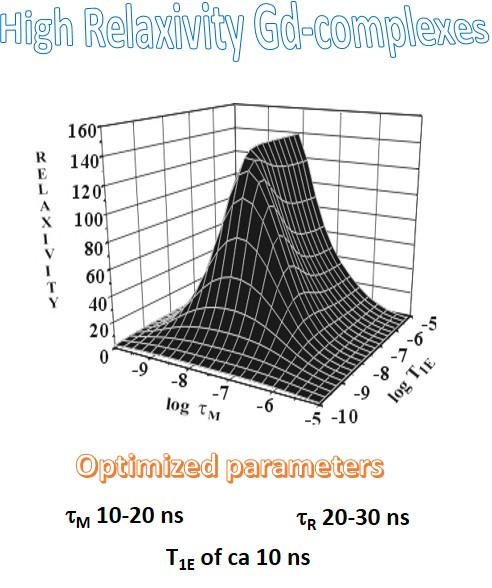
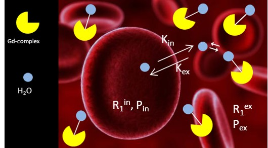

RESEARCH OVERVIEW
Study of the dynamic and structural properties
of paramagnetic metal complexes with potential applications in MRI and Molecular Imaging.

The sensitivity issue of MRI technique is related the intrinsic Relaxivity of a
given Contrast Agent. The chemists have to design systems endowed with structural and
dynamic properties that lead to optimized values for those parameters that are relevant
for a given contrast enhancing mechanism. Much work has been done and is ongoing to
design structures with high relaxivity.
Continue Reading >>

This research line relies on the fact that simple and cheap relaxometric methods can be set-up
in order to answer to particular medical or biological needs. The main advantage of the relaxometric methods is that the
measure of the observed relaxation rate is fast and straightforward and several types of relaxometer
are commercially available at easily affordable costs.
Continue Reading >>

Recently, several studies have shown increased signal intensity on unenhanced T1-weighted MR
images in some brain regions in patients with normal renal function who had previously
received multiple doses of GBCAs. The observed hyperintense signal has been associated with the retention of small amounts of gadolinium in
the brain. There has been evidence that both linear and macrocyclic GBCAs can yield detectable gadolinium traces
in the brain, with linear neutral agents leaving greater quantities.
Continue Reading >>